Короткий підсумок
Економічна безпека Болгарії аналізується через низку показників: виробнича, демографічна, енергетична, зовнішньоекономічна, інвестиційно-інноваційна, макроекономічна, продовольча, соціальна та фінансова безпека. Загалом є позитивні сигнали у виробництві та ВДЕ, але значні ризики пов'язані з демографічним навантаженням, імпортною залежністю та зростаючим державним боргом.
Виробнича безпека — урожайність зернових
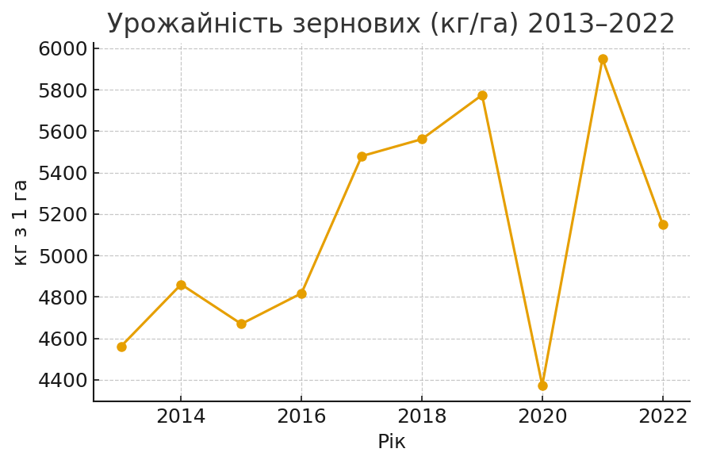У середньому рівень виробничої безпеки Болгарії за показником урожайності зернових культур у 2013–2022 рр. знаходився на оптимальному рівні. Лінія тренду висхідна, тенденція позитивна; максимум припадає на 2021 р.
Демографічна безпека — демографічне навантаження
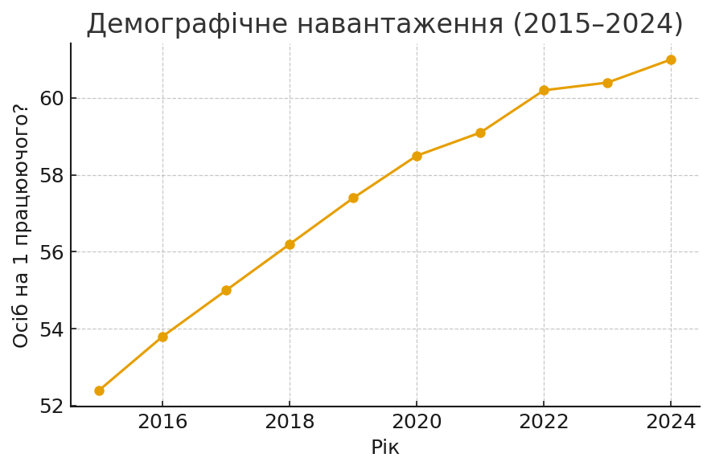У 2015–2024 рр. за показником демографічного навантаження демографічна безпека Болгарії була на абсолютно небезпечному рівні. Тенденція — висхідна (погіршення).
Демографічна безпека — очікувана тривалість життя
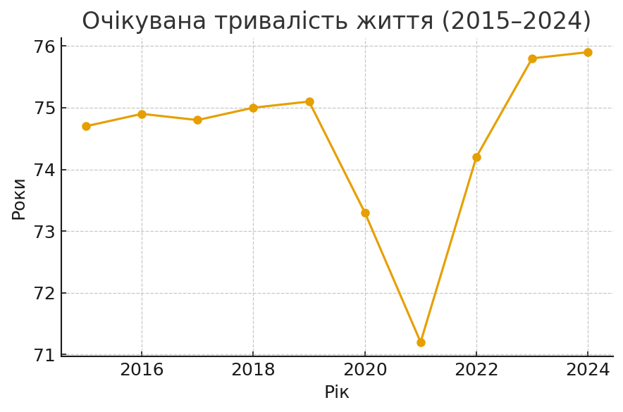У 2015–2024 рр. очікувана тривалість життя була на незадовільному рівні; тенденція стала (бічний тренд).
Демографічна безпека — дитяча смертність
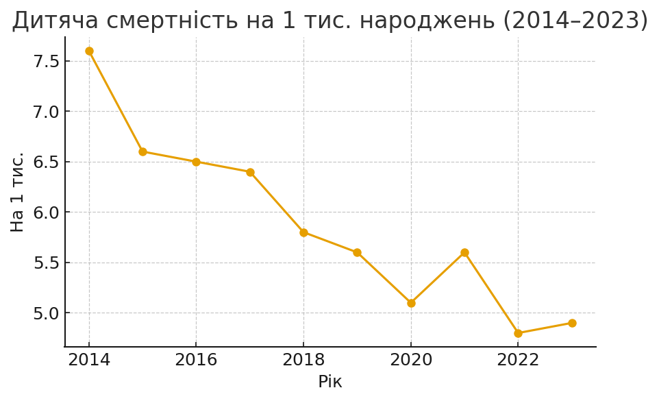У 2014–2023 рр. дитяча смертність показує позитивну тенденцію до зниження; рівень — незадовільний, але покращується.
Енергетична безпека — частка ВДЕ
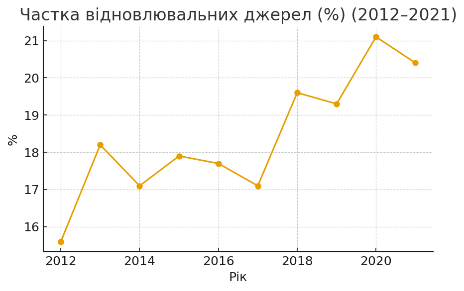У 2012–2021 рр. частка відновлювальних джерел зростала — енергетична безпека на оптимальному рівні; тенденція позитивна.
Енергетична безпека — імпортна залежність
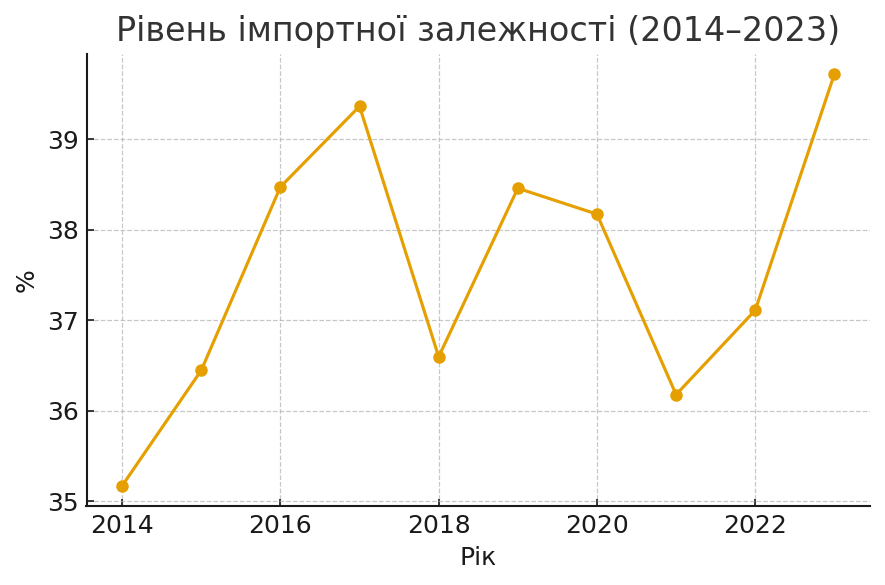У 2014–2023 рр. імпортна залежність знаходилась на незадовільному рівні; тенденція висхідна (негативна).
Зовнішньоекономічна безпека — відкритість економіки
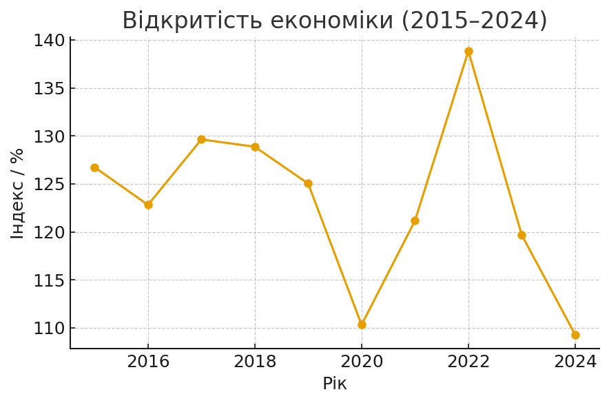У 2015–2024 рр. відкритість економіки висока (абсолютно небезпечний рівень за методикою); тенденція — низхідна в останні роки.
Зовнішньоекономічна безпека — частка експорту у ВВП
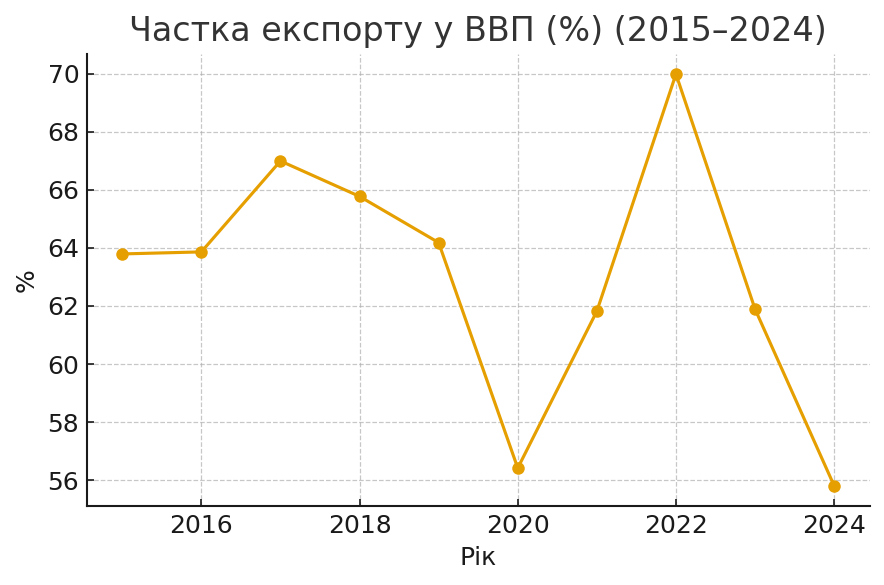Частка експорту у ВВП переважно стала, але має піки (2021). Показник помірний.
Зовнішньоекономічна безпека — частка імпорту у ВВП

Частка імпорту коливається; загалом бічний тренд.
Зовнішньоекономічна безпека — покриття імпорту експортом
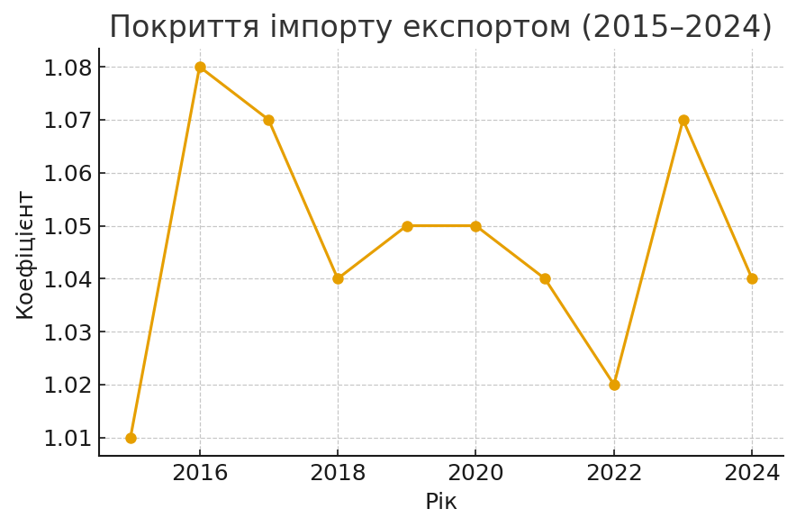Показник покриття імпорту експортом — оптимальний (близько 1.02–1.08); тенденція бічна.
Інвестиційно-інноваційна безпека — ПІІ до ВВП

Показник ПІІ до ВВП у 2015–2024 рр. був на низькому/ризиковому рівні; проте тренд висхідний у деякі роки.
Інвестиційно-інноваційна безпека — НДДКР у ВВП
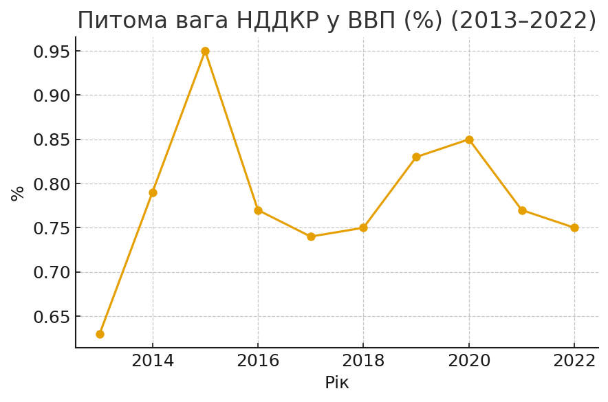Питома вага НДДКР у ВВП залишається критично низькою (приблизно 0.63–0.95%); тенденція стала.
Макроекономічна безпека — рівень безробіття
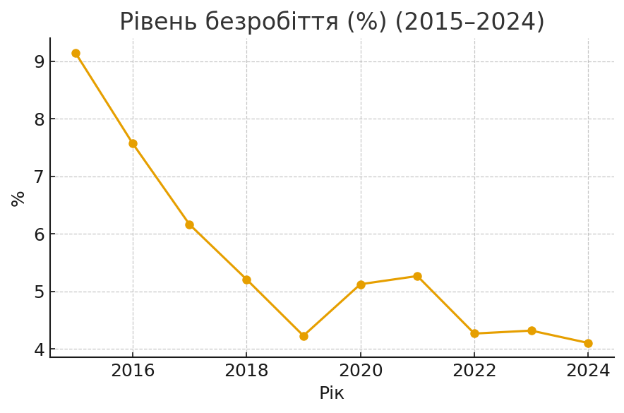Рівень безробіття у 2015–2024 рр. знижувався — позитивна тенденція; загалом задовільний рівень.
Продовольча безпека — виробництво зерна на особу

Виробництво зерна на одну особу у 2014–2023 рр. на оптимальному рівні; тенденція висхідна.
Продовольча безпека — виробництво зерна (тонн)
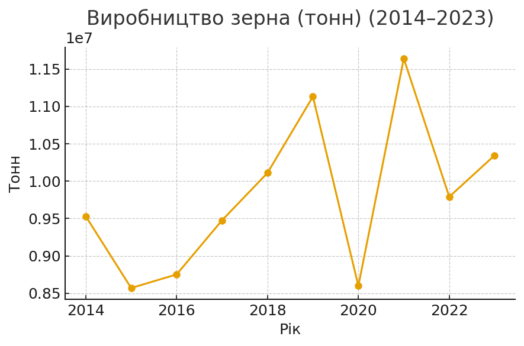Обсяги виробництва зерна мають висхідну динаміку з 2014 по 2021; є коливання.
Продовольча безпека — населення
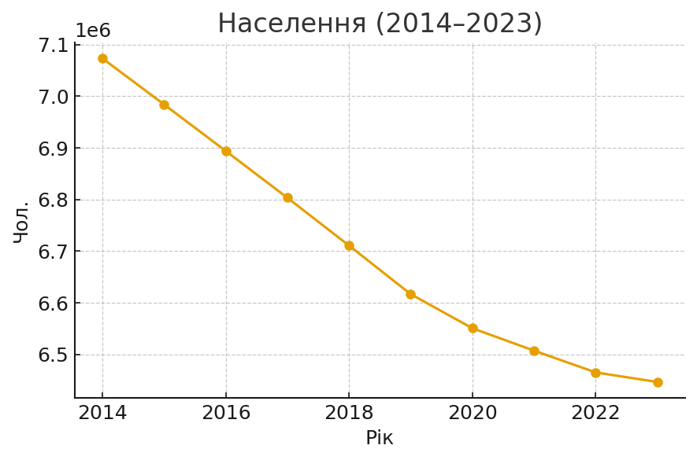Населення Болгарії знижується в періоді 2014–2023 рр. — демографічний тиск на продовольчу безпеку.
Соціальна безпека — децильний коефіцієнт
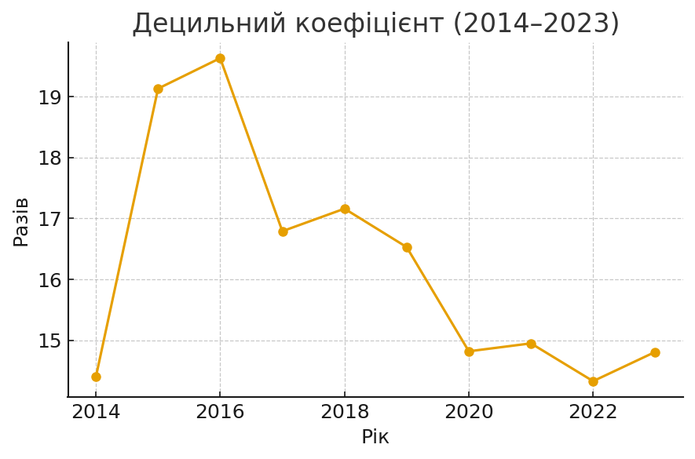Співвідношення доходів 10% найбагатших до 10% найбідніших у 2014–2023 рр. лишилось високим (абсолютно небезпечний рівень); тенденція має ознаки покращення у пізні роки.
Фінансова безпека — державний борг до ВВП
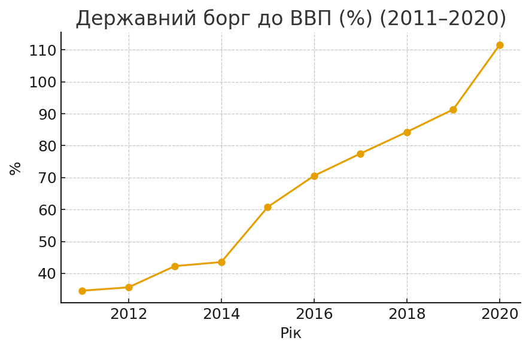Державний борг до ВВП (2011–2020) демонструє стрімке зростання до 2020 р. — фінансова безпека на абс. небезпечному рівні у 2011–2020 періоді.
Дані надані користувачем (семестрове дослідження).